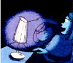
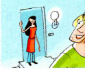

5b Suchen Sie typische Fotos und schreiben Sie die Ländernamen auf Kärtchen. Ihre Partnerin / Ihr Partner ordnet zu.
التمرين الأخير كتابة حرة. بيتحفظ تلقائي، من غير تصحيح آلي.


Hallo
A: auch: Servus / Grüß dich
CH: auch: Hoi / Sali / Salü
Guten Morgen
Guten Tag
A: Grüß Gott / CH: Grüezi
Guten Abend
Gute Nacht
Auf Wiedersehen
CH: Adieu
Tschüs
A: Servus / Baba
CH: Adieu / Ade / Adie
Ich heiße / Ich bin ...
Mein Name ist ...
Das ist ...
Wer ...?
Wie ...?
Frau die, -en
Herr der, -en
Name der, -n
Vorname der, -n
Familienname der, -n
Woher ...?
kommen aus ...
aus ...
Land das, ¨er
Deutschland
Österreich
Schweiz die
Wie geht’s?
sehr gut
gut
es geht
nicht so gut
Alphabet das, -e
buchstabieren
auch
danke
ja
nein
sehr
und